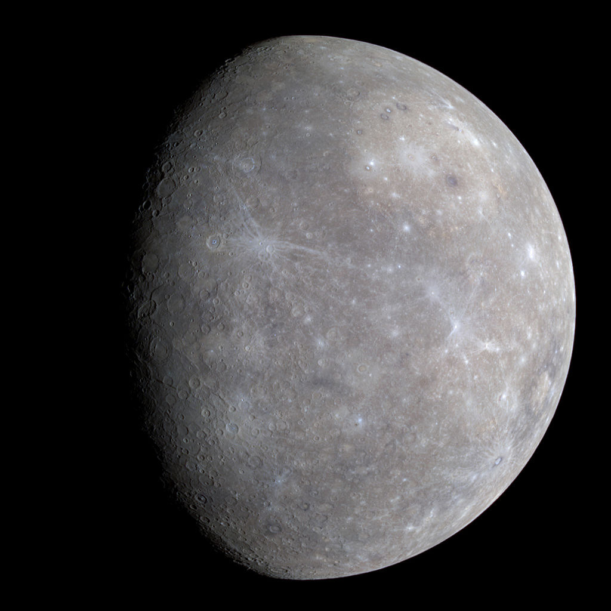

|
|
Content | Contact us | Gallery |
|
|
Content | Contact us | Gallery |
|
Mercury is the smallest and innermost planet in the Solar System. Its orbital period around the Sun of 87.97ndays
is the shortest of all the
planets in the Solar System.It is named after the Roman deity Mercury, the messenger of the gods. |
 |
|
Because the planet is so close to the sun, Mercury's surface temperature can reach a scorching 450 degrees Celsius.
However, since this world
doesn't have much of a real atmosphere to entrap any heat, at night temperatures can plummet to minus 170 C , a temperature swing of more than 600 degrees C,the greatest in the solar system. |
|
|
As if Mercury isn't small enough, it not only shrank in its past but is continuing to shrink today. The tiny planet
is made up of a single
continental plate over a cooling iron core. As the core cools, it solidifies, reducing the planet's volume and causing it to shrink. The process crumpled the surface, creating lobe-shaped scarps or cliffs, some hundreds of kilometers long and soaring up to more than a kilometre high, as well as Mercury's "Great Valley," which at about 1 000 km long, 400 km wide and 3.2 km deep is larger than Arizona's famous Grand Canyon and deeper than the Great Rift Valley in East Africa. |
|
|
According to NASA, the atmosphere of Mercury is a "surface-bound exosphere, essentially a vacuum." It contains 42
percent oxygen, 29
percent sodium, 22 percent hydrogen, 6 percent helium, 0.5 percent potassium, with possible trace amounts of argon, carbon dioxide, water, nitrogen, xenon, krypton and neon. |
|
The first spacecraft to visit Mercury was Mariner 10, which imaged about 45 percent of the surface and detected its magnetic field.
NASA's MESSENGER orbiter was the second spacecraft to visit Mercury. When it arrived in March 2011, MESSENGER (MErcury Surface,Space ENvironment, GEochemistry, and Ranging) became the first spacecraft to orbit Mercury. The mission came to an abrupt end on April 30, 2015, when the spacecraft, which had run out of fuel, crashed onto the planet's surface. |
|
|
In 2012, scientists discovered a group of meteorites in Morocco that they think could have originated from the planet Mercury. If so,
it would make the rocky planet a member of a very select club with samples available on Earth. |
|
|
In 2016, scientists released the first-ever global digital-elevation model of Mercury, which combined more than 10,000 images acquired by
MESSENGER to take viewers across the wide-open spaces of the tiny world. The model revealed the planet's highest and lowest points — the highest is found just south of Mercury's equator, sitting 2.78 miles (4.48 km) above the average elevation of the planet, while the lowest point resides in Rachmaninoff basin, the suspected home of some of the most recent volcanic activity on the planet, and lies 3.34 miles (5.38 km) below the landscape average. |